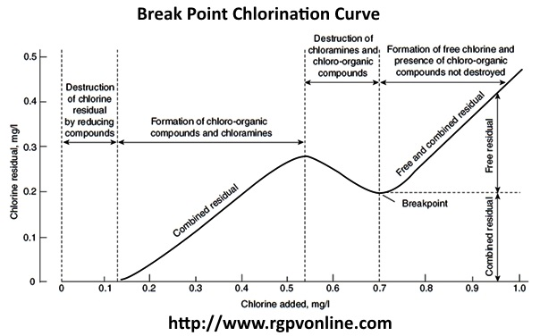

Q.9 What do you understand by break point chlorination?
What are the advantages of break point chlorination?
Explain break point chlorination
Explain break point chlorination with neat diagram.
Answer:
Break Point Chlorination (Break Point Chlorination Curve ) : It may be defined as the chlorination of water to such an extent that not only living organism but also other organic impurities in water are destroyed.
When chlorine is added to water, it is used for different reactions like oxidation of oxidizable substance, chlorination of organic substance, destructive oxidation of organic substances and disinfection of pathogens.
Initially all the chlorine added is consumed and there is no free chlorine. This is due to complete oxidation of oxidizable substances. As the applied chlorine increases, there is steady increase in amount of residual chlorine. This stage corresponds to formation of chloro-organic compounds and chloramines when the dose of chlorine increase, destruction of chloro organic and chloramines take place.
Addition of chlorine in such dosages is known as break point or free residual chlorination. The breakpoint chlorination ensure complete destruction of organic compounds, which gives color, unpleasant odour and bad taste. In addition to it a complete destruction of disease producing micro-organisms is also ensured.

Advantages
(1) It oxidizes complete organic matters, dissolved ammonia and other reducing particles.
(2) It removes color (which is due to the presence of organic compounds).
(3) It destroys (~ 100%) all the bacterias.
(4) It removes bad odour and bad taste.